| Trend | Seasonal variation |
|---|---|
Trend refers to long-term increases and decreases in the values.
 |
This is often evident in monthly or quarterly data and refers to a pattern
that is repeated each year.
 |
If you don't want to print now,
Time series data
Data sets whose measurements are made sequentially at regular intervals are called time series. We often want to forecast future values of a time series.
The importance of plotting
As with other data structures, the information in a time series is most easily understood from a graphical display. A time series plot is a type of scatterplot whose horizontal axis shows the time-ordering of the values. Successive crosses are often joined by lines.
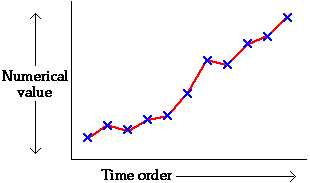
Types of pattern
| Trend | Seasonal variation |
|---|---|
| Trend refers to long-term increases and decreases in the values.
|
This is often evident in monthly or quarterly data and refers to a pattern
that is repeated each year.
|
| Cyclic variation (autocorrelation) | Random fluctuations |
|---|---|
This arises when values are similar to adjacent values,
making irregular waves or cycles .
 |
These are 'ups and downs' in a time series that do not correspond to trend, seasonal variation or autocorrelation.
 |
Most time series show more than one of these patterns to some degree.
Displaying several time series on the same plot
Several related time series can be superimposed with different colours on the same display, making comparisons easier. The crosses may be omitted.

Smoothing
Random fluctuations in a time series are usually noise that can obscure trend and other signal in the series. The values can be smoothed to reduce these random fluctuations and show the systematic movement in the series more clearly.
smoothed value = centre ( original value and adjacent values )
Moving averages
A 3-point moving average replaces the value at time i by

Moving averages are also called running means. In the example below, a 7-point moving average replaces each value with the mean of it and the 3 adjacent values on each side.

The more adjacent values used, the greater the smoothing.
Ends of the series
Note that moving averages cannot be used to smooth the values at the two ends of the time series.
Moving average with odd and even run lengths
A moving average provides a smoothed value at the middle of the times of the values being averaged.


If averaging over an even number of values, the smoothed value is for a time between those of the data values, such as "year 2005.5".
A second stage of averaging for even run lengths
To provide smoothed values at the same times as the raw data, we often take a further 2-point moving average.

This is equivalent to giving half weight to the two outermost values. If based on moving averages of 4, this is called a 4-point centred moving average.
These centred averages are particularly useful when analysing seasonal data. For example, 12-point centred moving averages are often used for monthly data.
Outliers and running medians
Since medians are less sensitive to outliers than means, a more robust alternative to running means replaces each value by the median of it and adjacent values. A 3-point running median is:
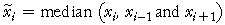
and higher-order running medians will use more adjacent values.
Comparison of means and medians

Running medians, followed by moving averages
To take advantage of the best features of both moving averages and running medians, these two techniques are often applied sequentially.
Smoothing up to the end of the series
We are usually most interested in the latest values in a time series, but moving averages cannot provide smoothed values at the two ends of the time series. Exponential smoothing works up to the end of the series:


where the smoothing constant, a, is a value between 0 and 1. The smoothed value is a 'weighted average' of the actual value at that time and the previous smoothed value.
Alternative formula
The formula can also be expressed as

For example, if a = 1/2 ,
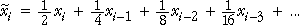
The smoothed value puts more weight on the recent past (which is an intuitively sensible thing to do).
Forecasting future values
If the most recent value is at time i, we forecast the value at time i + k to be the last exponentially smoothed value,

Time series with trend
If the time series has an increasing trend, exponential smoothing will tend to underestimate the trend. Similarly, the smoothed series will be too high if there is a decreasing trend.

Do not use exponential smoothing on a time series with trend.
Least squares smoothing of adjacent values
Another method that provides smoothed values up to both ends of a time series is called lowess (locally weighted scatterplot smoothing). When used with time series, it is similar to running means except that instead of using the average of values at adjacent times, it fits a least squares line through them and uses this least squares line to estimate the smoothed value.


The number of adjacent points used for each smoothed value can be adjusted. As this 'window' becomes wider, the values are smoothed more, but if it is too wide, detail is lost.
Since a separate least squares line must be fitted to obtain each smoothed value, a computer must be used to apply this method.
Local smoothing of scatterplots
Lowess can be used to smooth time series but was originally developed as a general way to draw a smooth curve on any type of scatterplot. Again, the smoothed value for any observation is obtained by fitting a least squares line to the observations with adjacent values for the explanatory variable. The fitted values that are obtained in this way are joined with lines.
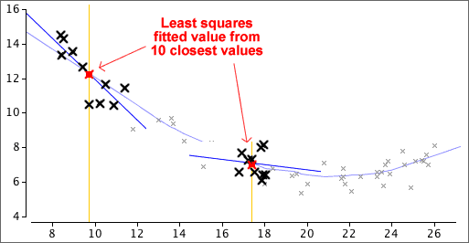
(Most computer software implements a version of lowess that is a actually bit more complex than has been described here but our simpler version gives a good flavour of the method.)
Least squares
Moving averages provide a good description of the trend in a time series but are less useful for forecasting future values. For forecasting, it is better to describe trend with a mathematical equation,
trend = function ( time )
The simplest such model is a linear model,
trend = b0 + b1 time
b0 and b1 can be estimated by least squares to minimise


Recoding the years
The large intercept in the example above is avoided if the years are recoded so that some year within the range of the data becomes "year 0".
trend = b0 + b1 (time − 1960)
This model is equivalent and gives the same fitted values and forecasts.

Quadratic models
If the trend in a time series is nonlinear, a linear model should not be used. A simple model that can explain some simple types of curvature is a quadratic model:
trend = b0 + b1 time + b2 time2
This has three parameters that can be adjusted to improve the fit of the model. Residuals are again defined as
ei = yi − trendi
and the least squares estimates of b0, b1 and b2 are the values that minimise the residual sum of squares,
Σ ei2
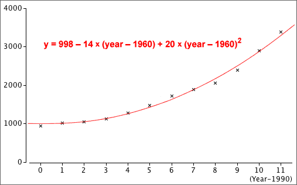
Using linear and quadratic models for forecasting
After fitting a linear or quadratic model by least squares, forecasting is simply a matter of inserting future time values into its equation.
Dangers in forecasting
It is important to realise that the forecasts from linear or quadratic models are highly dependent on the type of line or curve that is chosen for modelling. The dangers are the same as those for extrapolation in bivariate relationships.
Beware forecasting many time periods into the future — the shape of the actual trend line might be different from your model.
Cubic and higher-degree polynomial models
If a quadratic model does not adequately describe the shape of the trend in a time series, it is tempting to try to further increase the order of the polynomial,
trend = b0 + b1 time + b2 time2 + b3 time3 + ...
This kind of polynomial model can also be fitted by least squares.
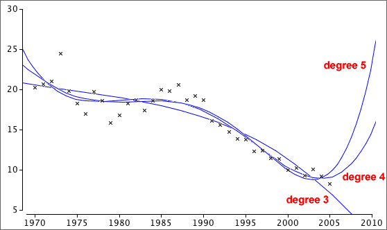
A polynomial of degree 3 or 4 often provides a fairly smooth description of trend but polynomial models usually behave badly (with sudden increases or decreases) beyond the data points, so...
Polynomial models of degree greater than 2 should not be used for forecasting.
Residuals
The residuals for a time series model subtract the trend from the values and are called the detrended values,
ei = yi − trendi
If the model under consideration fits well, there should be no pattern in the residuals — each should have the same chance of being positive or negative.
Autocorrelation of detrended values
In many time series, there is a tendency for unusually large values to be followed by other similar values, even after detrending the series,
ei = yi − trendi
Any tendency for these residuals to be followed by others of similar size is called autocorrelation and can be described by the correlation coefficient between pairs of adjacent residuals.
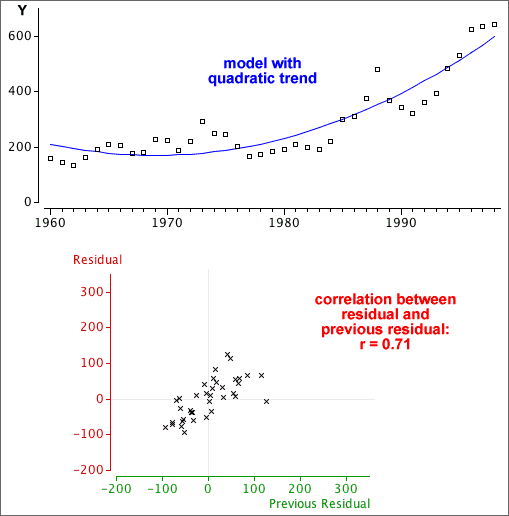
In this example, the autocorrelation is 0.71, so there is some tendency for values above the trend line to be followed by others on the same side of it.
Positive autocorrelation has an important impact on forecasting — if the most recent value is above the trend line, we should forecast the next value will also be above it.
Predicting a value from the previous value
In a time series without trend, positive autocorrelation means that values tend to be followed by others of similar size.
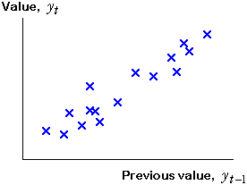
We can try to predict yt from its previous value by fitting a straight line by least squares to this scatterplot,
yt = b0 + b1 yt−1
This is a type of auto-regressive model, and is usually called an AR(1) model.

Forecasting further into the future
The model only directly predicts one time period into the future,
 t = b0 + b1 yt − 1
t = b0 + b1 yt − 1
but we can predict further into the future using:
 t + k = b0 + b1
t + k = b0 + b1  t + k −1
t + k −1
Forecasting when there is trend
The method described in the previous page works well if there is no trend in the time series. If there is trend, we should remove it before using an AR(1) model. The steps for forecasting a future value are therefore...
(There are more efficient ways to do steps 1 and 2 together, but these are beyond the scope of an introductory course.)
Dangers of over-interpretation
Very strong autocorrelation in a time series can result in apparent trends, even when there is no real trend underlying the series. Autocorrelation and trend are especially difficult to distinguish in short time series. You should therefore be wary of extrapolating a trend into the future if there is high autocorrelation.
Many time series change in cycles, with increases and decreases that cannot be explained by a smooth trend line.
Seasonal patterns
Some cycles are seasonal. Seasonal patterns are distinguished by a period that repeats exactly — for example, monthly data has a period of exactly 12 months.
Seasonal patterns are not usually referred to as 'cyclical'.
Cyclical patterns
Other cycles repeat much less regularly. Sun-spot activity has cycles of approximately 11 years, and the 'business cycle' can be anywhere between 3 and 10 years. In both cases, different cycles are not exactly the same length.
The AR(1) method can be used to obtain forecasts for cyclical data with irregular cycle lengths.
We will not distinguish cyclical patterns from other forms of autocorrelation here.
Seasonal data
In monthly or quarterly data, there is often a pattern of peaks and troughs that repeats in a similar way each year. Daily data often show a pattern that repeats each week, and hourly data often have a daily pattern. These are all called seasonal patterns.

Seasonal patterns make it difficult to assess whether a particular month's value is unusually high or low.
Regular seasonal patterns can be projected into the future and are important in forecasting.
Moving averages
Daily data have a cycle length of 7 days, so each 7-point running mean averages exactly one value from each day of the week. If the seasonal pattern was to repeat exactly every week, 7-point moving averages will be the same every day, as illustrated below.

The diagram below removes a monthly seasonal effect with 12-point moving averages.

Limitations of moving averages for removing seasonal variation
Estimating a common seasonal effect
If the underlying seasonal pattern in monthly data repeats in the same form each year, the residuals from 12-point moving averages can be used to estimate the seasonal pattern. The seasonal effect for any month is estimated as the average of the residuals for that month.

Removing the seasonal effect
Having estimated a common seasonal effect that describes how far each month's value is (on average) from the overall trend, we can subtract this seasonal effect to obtain deseasonalised data. This is often called seasonally adjusting the data.

The time series can be deseasonalised in this way for all years (including the most recent data).
The deseasonalised data not only shows the trend in the series more clearly, but also shows individual months that are substantially different from the usual seasonal pattern.
Four components of a time series
The variation in a time series can be split into four separate components:
Deseasonalised = Trend + Cyclical + Residual
(Of course, the seasonal effect is only present for seasonal data.)


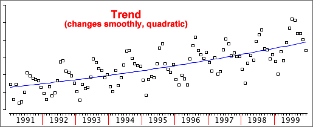
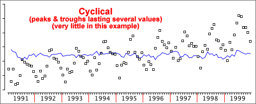

Forecasting the individual components
The seasonal, trend and cyclical components can be separately forecast into the future. Putting them together provides a forecast for the time series values,
Forecast = Seasonal effect + Trend forecast + Cyclical forecast
Additive models
We assumed earlier that the four time series components affect it additively.
Deseasonalised = Trend + Cyclical + Residual
This implies that:
The seasonal pattern has greater magnitude at the end of the following time series than at its start, so an additive model is not appropriate.

Multiplicative models
In many time series, the absolute differences in the values are of less interest and importance than the percentage changes. A multiplicative model assumes that seasonal and other effects act proportionally on the series:
Data = (Seasonal effect) × Trend × Cyclical × Residual
After taking logarithms (either natural logarithms or to base 10), the four components of the time series again act additively.
| log(Data) | = log(Seasonal effect × Trend × Cyclical × Residual) |
| = log(Seasonal effect) + log(Trend) + log(Cyclical) + log(Residual) |
To fit a multiplicative model, analyse the logarithms of the data with an additive model.
Difference between additive and multiplicative models
Additive and multiplicative models can only be easily distinguished when there is noticeable trend in the time series.


Obtaining forecasts
A multiplicative model is equivalent to an additive model for the log data.
log(Data) = Seasonal* + Trend* + Cyclical* + Residual*
This model will give forecasts of the log data.
forecast of log(Data) = (forecast Seasonal*) + (forecast Trend*) + (forecast Cyclical*)
To obtain forecasts in the original scale, an inverse transformation must be applied. With base-10 logarithms,
| forecast of Data = 10 | forecast of log(Data) |
(If natural logarithms were used, an exponential function gives a forecast in the original units. Both types of logarithms result in identical forecasts.)

Analysis of the raw data can sometimes lead you to wrong conclusions. Adjustment of the data prior to analysis may give you better insight.
Seasonally adjusting data
Data should be seasonally adjusted to remove any seasonal pattern before you try to interpret whether any particular value is unusually high or low.
Adjusting to constant dollars
A 1990 dollar was worth considerably more than a 2010 dollar, making it hard to compare prices in these two years.
Values described in dollars should be adjusted to 'constant' dollars using the consumer price index (CPI) or the price of some other 'standard' commodity. Using average income to adjust house prices to '1990 dollars',

Using per capita data
Looking at trends in 'quantity' values (e.g. a country's total alcohol consumption) is misleading over a period in which the population increases. It is more meaningful to examine quantities per person.
Always consider carefully whether a different variable would describe the data more meaningfully.
A classification of time series
Time series data arise in various different contexts.
The measurements themselves may be:
In this e-book, all of the above types of time series are analysed in the same way.
Index numbers
An index number measures the value of an item (or group of items) at a point in time as a percentage of the value of the item (or group of items) at another fixed time point.
Price and quantity indices
Price indices summarise how the prices of items vary over time.
Quantity indices describe how the quantities of items (e.g. imports) vary over time. We only consider price indices in this section, but many of the principles and formulae carry over to quantity indices.
Common business indices
The Consumers Price Index (CPI) in a country summarises the overall price level of goods and services purchased by households. Other price indices describe prices of energy, accommodation and various classes of food.
Stock market indices such as the Dow Jones (USA), FTSE 100 (UK) and NZX50 (New Zealand) summarise changes in the value of company shares. Other stock market indices such as the NASDAQ (technology) describe particular market segments.
Simple price index
This expresses the price of a single item as a percentage of its price at a base time (usually in the past). If P0 is the price in the base year and Pi is the price in year i, then the price index for year i is


An aggregate price index summarises the prices in a 'basket' of several related items.
Unweighted aggregate price index
The simplest is a simple price index applied to the sum (or average) of n item prices,

where Pi(j) and P0(j) denote the prices of the j-th item at time i and at the base time respectively.
Taking account of quantities
Some items in the 'basket' are usually more 'important' than others.
| Average retail price of fish ($/kg) | ||||||
|---|---|---|---|---|---|---|
| 2005 consumption per capita | 2005 | 2006 | 2007 | 2008 | 2009 | |
| Tarakihi | 15.4 kg | 19.20 | 20.78 | 22.77 | 25.43 | 26.67 |
| Gurnard | 13.7 kg | 18.41 | 20.15 | 21.93 | 24.32 | 26.42 |
| Snapper | 4.6 kg | 28.73 | 30.43 | 33.67 | 35.16 | 37.40 |
The price of Snapper should have much less influence on the aggregate index than the other types of fish, since much less of it is consumed.
Weighted price index
A weighted price index is more influenced by items with higher consumption and is based on the total amount spent by an average consumer. In 2005, this was:
15.4 × 19.20 + 13.7 × 18.41 + 4.6 × 28.73 = 680.06
Assuming the same consumption for all years,
| $ per capita spent on fish | ||||
|---|---|---|---|---|
| 2005 | 2006 | 2007 | 2008 | 2009 |
| 680.06 | 736.05 | 805.98 | 886.54 | 944.71 |
The Laspeyres index is a simple price index applied to these totals.
| Laspeyres fish price index | ||||
|---|---|---|---|---|
| 2005 | 2006 | 2007 | 2008 | 2009 |
| 100 | 108.23 | 118.52 | 130.36 | 138.92 |
Paasche index
The Laspeyres index uses quantities in the base year as weights. The Paasche index is similar but is based on quantities in the current period.
We only consider the Laspeyres index here.
Formula for Laspeyres index
An equivalent mathematical formula for the index is:
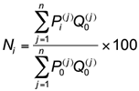
where Q0(j) denotes the quantity of the j-th item in the basket at the base time.
Other adjustments of time series
Many time series are affected by more than one variable changing over time. The influence of an ancillary variable can be removed with an index that summarises its effect. If Xi denotes the time series value and Ni is the index for the ancillary variable, the ancillary variable's effect can be removed by:

This is called deflating the series.
Correcting for inflation
The Consumer Price Index (CPI) is often used to adjust for inflation. If the CPI was 953 in 2005 and 1044 in 2008, the price of an item in 2008 ($25.43) can be expressed in "2005 dollars" as:

Prices usually change much less over time in 'constant dollars' than in raw dollars.
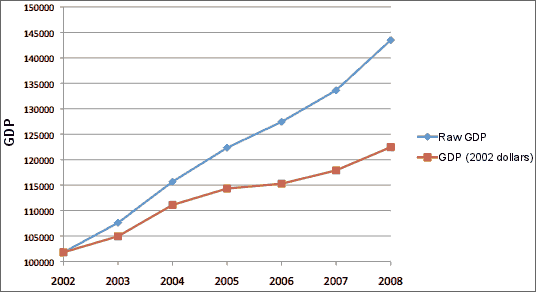